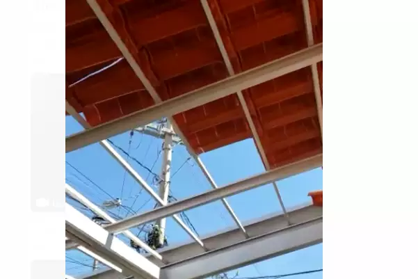
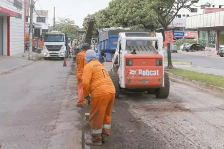

Finados

Movimentação no Terminal Rodoviário de Betim teve aumento de 12% no feriado
O movimento no Terminal Rodoviário de Betim, na região metropolitana de BH, foi tranquilo durante o feriado de Finados, mas superou as expectativas da Transbetim - órgão responsável pela administração do espaço.
Que susto!
Vento provocado por aeronave destelha casas em Uberlândia
A passagem de uma aeronave destelhou sete casas em Uberlândia, no Triângulo Mineiro, na tarde desta quarta-feira, no bairro Jardim Ipanema. Apesar dos danos, ninguém se feriu.
Saúde
Campanha de vacinação contra a pólio é prorrogada em Betim
Devido a baixa cobertura vacinal, as campanhas de vacinação contra a poliomielite, sarampo e de multivacinação foram prorrogadas para até o dia 20 de novembro, em todos as Unidades Básicas de Saúde (UBSs) de Betim.
Mobilidade
Avenida das Américas, em Betim, volta a ser recapeada no sentido BR-381
A Prefeitura de Betim iniciou, nesta semana, a segunda etapa das obras de melhoria da avenida das Américas, uma das principais vias da cidade. Ao longo de cerca de 30 dias, serão recapeados 1.180 metros de asfalto no local, do centro sentido BR–381.
Conheça a cidade:
Conheça um pouco da cidade de Betim